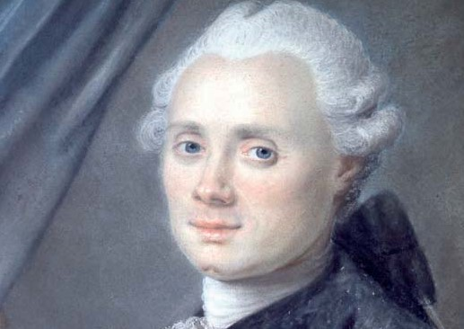
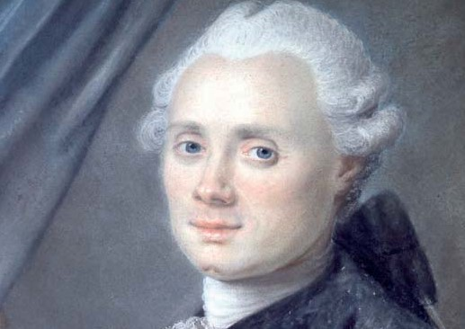
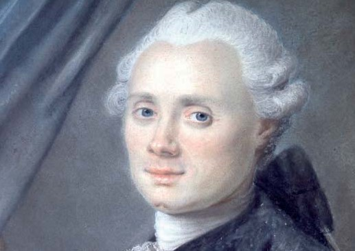
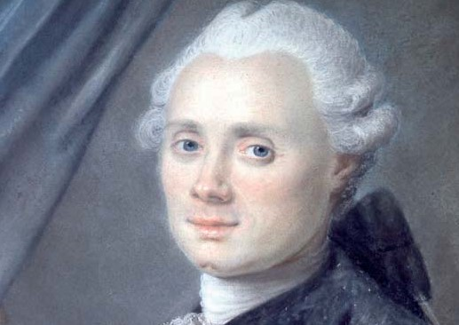

Charles Messier, (junio 26, 1730, Badonviller, France,abril 12, 1817, Paris), fue un astrónomo francés, más conocido por ser el creador, en 1774, del catálogo de 110 objetos del espacio profundo, incluyendo nebulosas, galaxias y cúmulos de estrellas. Fue el primero en compilar cuerpos celestes.
Fue el décimo de 12 hijos que tuvo el matrimonio de Nicolás Messier (fallecido cuando él tenía 11 años) y Francoise B. Grandblaise.
Desde muy temprana edad, Charles adquirió una gran habilidad para dibujar y observar. Esto le permitió poder adquirir un trabajo en 1751 de astrónomo real de la marina de Francia. En ese empleo no sólo dibujaba mapas celestes, sino que también elaboraba mapas geográficos de gran precisión. Llevó a cabo algunos de los dibujos del tránsito de Mercurio, y comenzó a realizar cálculos y medidas de las posiciones exactas de los astros del sistema solar.
La destreza del manejo que tenía para los aparatos astronómicos y su vista excelente le hicieron convertirse en un gran observador, y utilizaba sus habilidades para encontrar nuevos cuerpos celestes. Se dedicó a buscar el cometa Halley, pudiendo localizarlo el 21 de enero de 1759 (En el proceso, descubrió 20 nuevos cometas).
Dado que los instrumentos que empleaba tenían muy poca calidad, seguía encontrando objetos difusos que confundía con cometas. Para evitar errores, clasificaba sus descubrimientos en números y anotaba su posición con una breve descripción. De esta forma, cuando encontraba algo nuevo, podía revisar los datos y comparar los resultados. Más tarde, elaboraría el “Catálogo de Nebulosas y Cúmulos de Estrellas que se observan entre las estrellas fijas sobre el horizonte de París”, siendo la primera edición publicada en 1771, conteniendo sólo 45 objetos (siendo algunos encontrados por él y el resto por otros astrónomos).
Por su trabajo y su reconocimiento académico, fue admitido en la Royal Society of London, y el rey de Prusia le concedió un nombramiento en la Academia de Berlín. Fue nombrado también miembro de la Academia de Suecia en Estocolmo.
En su vida personal, contrajo matrimonio a los 40 años de edad con Marie-Françoise de Vermauchampt, de 37 años de edad. Su unión no duró mucho, dado que su esposa murió con su hijo recién nacido, hecho que impactaría profundamente al francés.
En 1784, publicó su cuarta y última edición del catálogo Messier con 109 objetos divisados, recibió los nombramientos de la Academia de Ciencias de Dublín (1784), la Academia de Stanislav, Nancy, Lorena (1785), y la Academia de Vergara, España (1788).
Finalmente, en 1801, formó parte del último proyecto en el que descubrió su último cometa conocido como el cometa Pons. Murió en 1815, a los 87 años, de un infarto cerebral, dejando como legado grandes hazañas.